Differentiable and distributed Particle-Mesh n-body simulations
the \(\Lambda\)CDM view of the universe
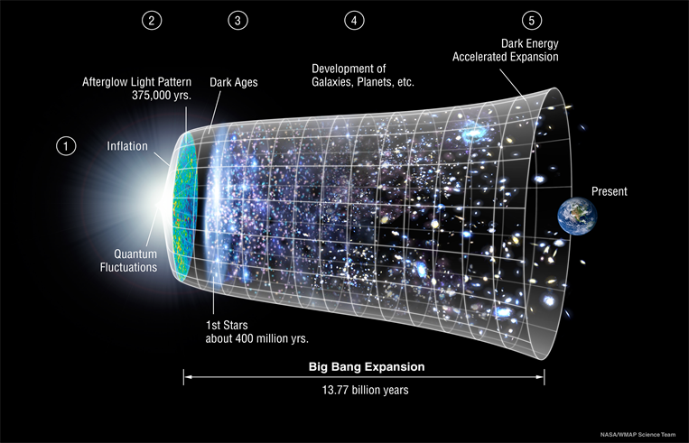
Cosmological Parameters:
- Physical baryon density \(\Omega_b\)
- Physical dark matter density \(\Omega_{cdm}\)
- The age of the universe \(t_0\)
- Scalar spectral index \(n_s\)
- Curvature fluctuation amplitude \(A_s\)
- Reionization optical depth \(\tau\)
Cosmological probes
Weak Gravitaional Lensing
\[ \boxed{e = \gamma + e_i} \] ➢ With \(\gamma\) representing the shear and \(e_i\) representing the intrinsic ellipticity, distributed as \(\mathcal{N}(0, I)\)
➢ We use the shear as as probe of dark matter distribution
Traditional cosmological inference
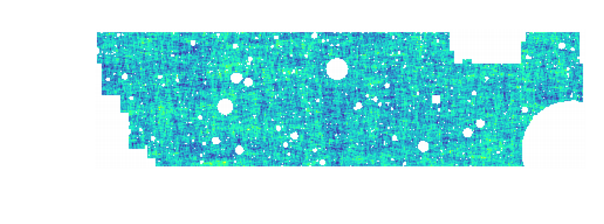
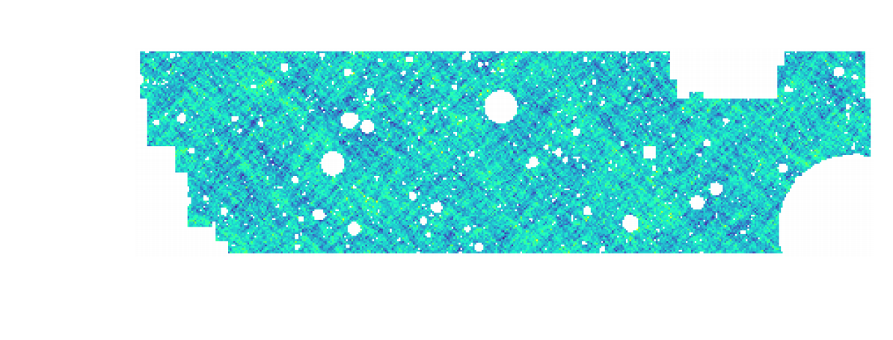
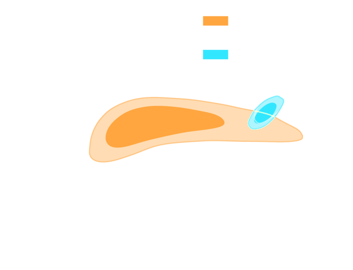 (Hikage et al. 2018)
(Hikage et al. 2018)
➢ Measure the ellipticity \(e = \gamma + e_i\) of all galaxies
➢ Compute summary statistics based on the 2-point correlation function of the shear field
➢ Run an MCMC chain to recover the posterior distribution of the cosmological parameters, using an analytical likelihood \[p(\theta | x ) \propto \underbrace{p(x | \theta)}_{\mathrm{likelihood}} \ \underbrace{p(\theta)}_{\mathrm{prior}}\]
Limitations
- Simple summary statistics works well for Gaussian fields
- The need to compute from theory the likelihood for simple summary statistics
Beyond 2 point statistics : Forward modeling
➕ No longer need to compute the likelihood analytically
➖ We need to infer the joint posterior \(p(\theta, z | x)\) before marginalization to get \(p(\theta | x) = \int p(\theta, z | x) \, dz\)
Possible solutions
- Hamiltonian Monte Carlo
- Variational Inference
- Dimensionality reduction using Fisher Information Matrix
All require a differentiable fast forward model
Forward Models in Cosmology
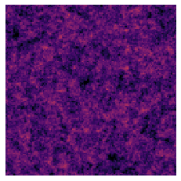
Cosmological simulations WIP
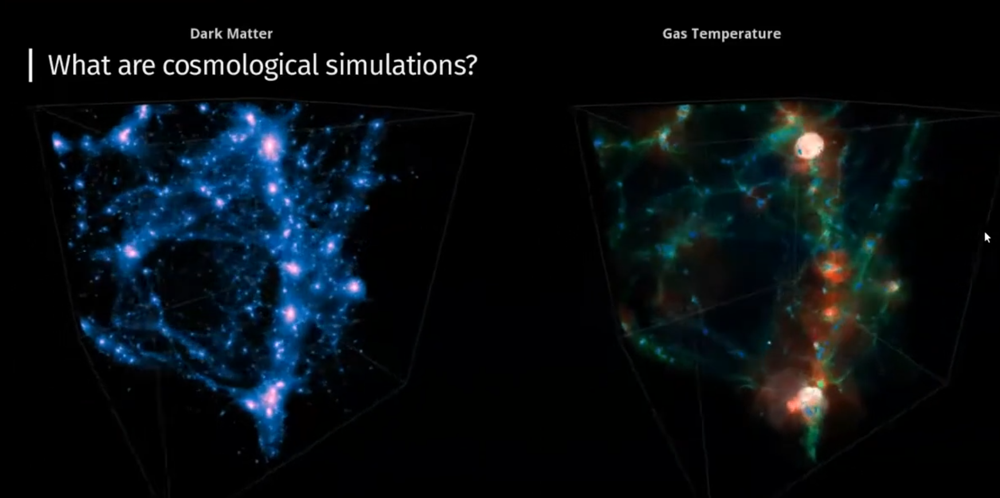
Fast Particle-Mesh WIP
Having a full n body simulation is very expensive, so we use a particle mesh simulation
The idea is to put particles in a grid and evolve the particles in the grid
you lose some precision on the small scales, but on the large scale it is pretty accurate.
Numerical cheme
Cloud in Cell binning
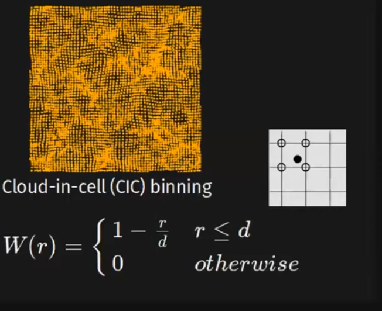
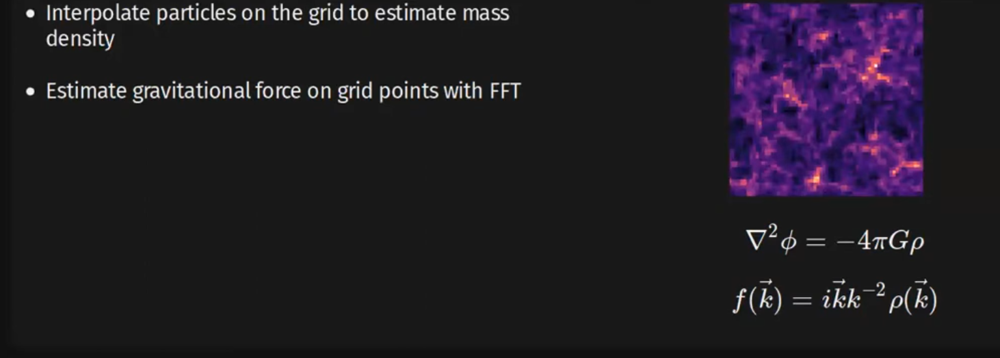
when we have the forces on the grid point we interpolate the forces on the particles
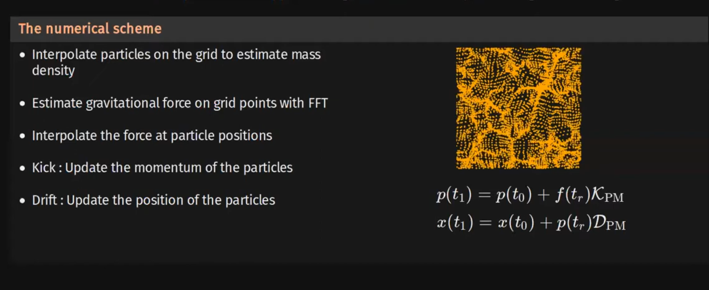
Where does LSST fit into this WIP
Rubin observatory will provide us with a 15 TB of data per night for 10 years
say that we need to make a cube of big part of the volume of the survey.
Picture of a 3D force vector field
High end GPUs have a reached 80 GBs A100 next generation H100
Problems to consider WIP
- Diffrentability
- Fast GPU
- Distribution of the data
- Multi Host distribution
JAX
JAXDECOMP WIP
example of numpy code and grad
we can also run multiple devices in a single controlle set up
80 w=x 80
Differentiable multi host distributed n body simulation that runs on GPUs
Related work
FastPM Poqueres nbody 64^3 pmwd 512^3
JAXPM WIP
built on top of JAXDECOMP
example code of JAXPM
Three steps
Generate the linear field
then LPT simulation
then the final nbody simulation (use any differential equation solver like diffrax)
Finally we put the final grid back to the particles
AutoDiff capabilities WIP
We can simply differentiate the entire simulation using jax.grad
We can also interface it with machine learning frameworks like flax for the dark matter halo painting and galaxy painting
Benchmark WIP
Animation WIP
Unique solutions : no, two particles crossing each other yoy can’t tell which one is which